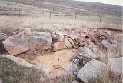

El dolmen de Carrascosa de la SierraHacia el año 1970, en el Alto de la Tejera, en el término de Carrascosa de la Sierra, fue localizado el dolmen, único monumento funerario de este tipo que hoy se conoce en la provincia de Soria. El dolmen consta de un recinto o cámara circular de unos 3,80 m. de diámetro, formada por seis grandes bloques de piedra, alguna de más de 2 m. de largo, con un grosor medio de 30 cms. y una altura próxima a los 90 cms.
 |
| HISPANIA | EN RUTA | TOPÓNIMOS |